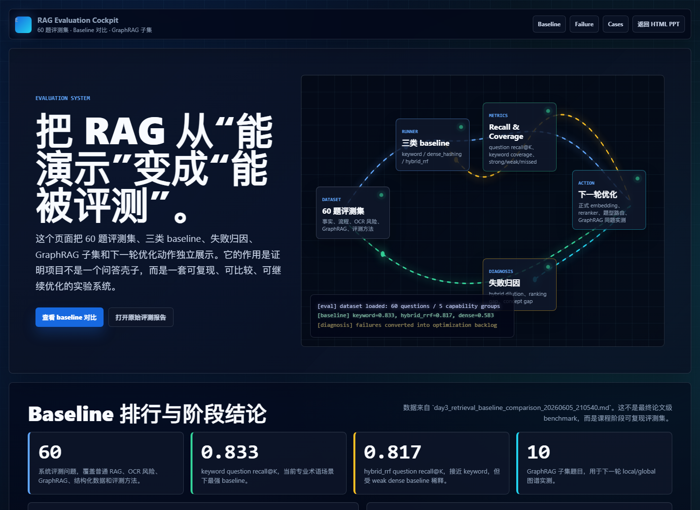

01
资料问答
PDF、扫描页、表格、JSON 标注和维修报告统一进入系统。
项目起点来自“鸿雁计划”：基于知识图谱增强的工业故障诊断 RAG。课程阶段重点是把设想落到工程闭环。
汇报围绕四类能力展开：资料问答、关系追踪、综合能力、评测能力。
PDF、扫描页、表格、JSON 标注和维修报告统一进入系统。
部件、故障、工况、参数和维修动作通过实体关系连接。
跨文档、跨部件问题不只返回单段文本，而是汇总证据。
用 baseline、公开 benchmark 和失败归因判断系统路线。
从 PowerKB-Agent 设想到最小工作台，再到 OCR、GraphRAG 和评测平台。
知识层、检索层、Agent 层，目标是新框架、新指标和中文基准。
JSON 解析、ChromaDB 写入、查询、统计和导出。
扫描 PDF、OCR、页码、来源和元数据成为系统前置条件。
60 题 baseline、GraphRAG 子集、公开 benchmark 和失败归因。
动力装备领域资料散落在技术手册、检修规程、历史故障案例、行业标准和工程师经验中。
PowerRAG 的价值不在“回答流畅”，而在答案能回到原始资料，被检查、被引用、被继续优化。
燃气轮机某类故障可能和哪些部件或工况有关？
JSON、文字型 PDF、扫描型 PDF 的处理方式不同；统一入口是后续检索、图谱和评测的前提。
RAG 的上限不只取决于模型，也取决于资料进入系统之前有没有被正确处理。
每个 chunk 需要保留文件、页码、标题、上下文和原始位置，后续答案才能被引用回来。
BM25 / keyword 对型号、故障名、部件名等强术语敏感。
把文本转成高维语义表示，寻找意思相近的证据。
保存部件、故障、工况、参数、维修动作之间的关系。
60 题动力装备 baseline 显示：强术语语料下，keyword 当前更稳。
| 方法 | Question recall@K | 结论 |
|---|---|---|
| keyword | 0.833 | 当前最强，说明强术语显著。 |
| hybrid_rrf | 0.817 | 接近 keyword，但还需要路由和 reranker。 |
| dense_hashing | 0.583 | 可复现语义基线，不代表最终 embedding 上限。 |
优先走标准 RAG 与关键词检索，命中直接证据。
进入 GraphRAG，沿实体和关系查故障链。
聚合多个证据块，避免只返回单段最相似文本。
使用社区摘要和全局检索，回答跨文档规律。
设备、部件、故障、工况、参数和维修动作抽取成节点与边，支持关系链追踪。
定义、说明、步骤、参数等有直接证据的问题。
故障、部件、工况、参数之间的多跳关系追踪。
同一批问题分别走 local、global 和标准 RAG，比较准确性和引用质量。
课程阶段先把资料、检索、图谱和评测这条主链路做出来，而不是提前夸大完整 Agent。
这里要分清两类结果：动力装备 60 题 baseline 判断本项目路线；公开 benchmark 外部评测对标成熟 RAG 任务。
| 证据项 | 阶段记录 | 说明 |
|---|---|---|
| 动力装备 60 题 baseline | 0.833 / 0.817 / 0.583 | keyword、hybrid_rrf、dense_hashing 同题对比。 |
| 开源 benchmark 外部评测 | 93.47 / 100 | 100 个公开 benchmark case，retrieval-first score。 |
| legal-rag-bench | 96.68 / 100 | 50 题，外部质量门禁通过。 |
| ragbench-hotpotqa-validation | 90.25 / 100 | 50 题，多跳问答 benchmark，通过 90 分门槛。 |
| Open Source 90 Gate | pass | 不等同于动力装备专家验收，但证明评测平台可接入公开 benchmark。 |
失败不是一句“效果不好”，而是可以拆成资料、OCR、分块、召回、排序、图谱和证据绑定问题。
解析、OCR、分块、元数据保留和入库。
导入仓库或加载内置结果，输出分数和失败分析。

GitHub API 限流时，页面可切换到内置评测快照继续演示。
而是给大模型提供可检索、可引用、可评测的领域资料基础。
适合关系追踪、社区摘要和全局综合；事实型问题仍可走标准 RAG。
资料入口、证据构建、检索比较、GraphRAG 方向和评测平台已形成。
资料进入系统，形成可引用证据；证据进入关键词、向量和图谱空间；评测平台再用题集、baseline 和失败归因验证效果。